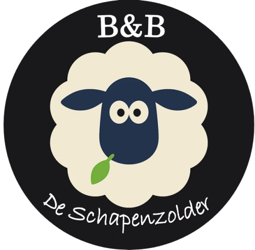

Een verblijf in onze B&B kost voor twee personen €120.- incl ontbijt en toeslagen
Inclusief: koffie- en thee faciliteiten op de kamer en een landelijk, vol streek
producten, vers gemaakt ontbijt. Gebruik van handdoeken, gratis Wifi,
gratis parkeren op ons erf en gelegenheid tot het opladen van fietsen.
Desgewenst willen wij ook een picknickpakket voor u klaar maken voor € 10,00
per persoon.
Wilt u graag doordeweeks bij ons logeren of komt u alleen?
Neem dan gerust even contact met ons op. (06 82078569)